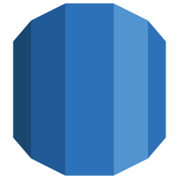
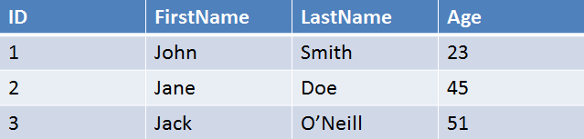
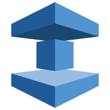

What are AWS Database options?
- RDS
- Managed Relational Database Service
- DynamoDB
- ElastiCache
- Redshift
- Fast, Simple, Cost-Effective Data Warehousing
- DMS (in Migration section now)
- Managed Database Migration Service
RDS - Relational Database Service

- Tables, Rows, Columns

Relational Database Types in AWS
- SQL Server
- Oracle
- MySQL Server
- PostgreSQL
- Aurora
- MariaDB
Non Relational Databases
- Database
- Collection = Table
- Document = Row
- Key Value Pairs = Fields
{
"id":"1",
"firstName":"John",
"lastName":"Smith",
"age":"23",
"address":[
{
"street":"21 Jump Street"
}
]
}
ElastiCache

- Makes it easy to deploy, operate and scale an in-memory cache in the cloud
- Improve performance of web applications to retrieve information from fast, managed, in-memory caches (instead of disk-based
OLTP vs OLAP
- Online Transaction Processing (OLTP)
- Query one specific record or smaller recordset (pull up record with id 1234)
- hits the DB lightly
- Online Analytics Processing (OLAP)
- To analyze large volume of information
- Data warehousing – copy of production database (in different type of architecture e.g. columnar storage)
Redshift - Data Warehousing
- Used for business intelligence. Used to pull in very large and complex data sets. Usually used by management to do queries on data (current performance vs targets)
Database Migration Service
- Allows to migrate a production database to AWS
- AWS manages data transformation, compression and parallel transfer
- Data changes to the source database that occur during the migration process are automatically replicated to the target
- AWS schema conversion tool (schema, views, stored procedures, functions)